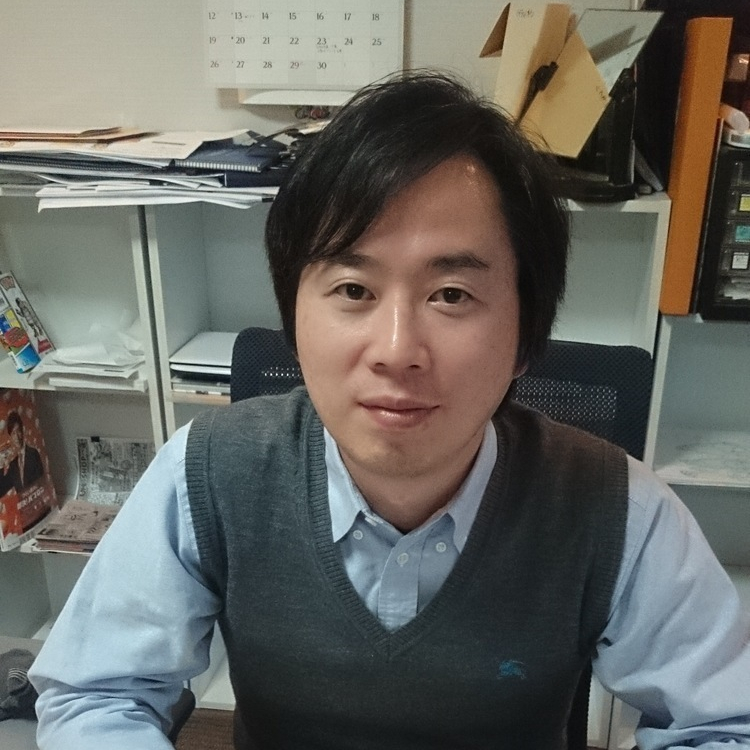

Nossa Equipe Criativa

Masashi Kishimoto
Criador de Naruto e diretor geral. Responsável por desenvolver a narrativa e supervisionar o projeto.
Hiroshi Yamaguchi
Roteirista principal. Encabeçou a adaptação do universo de Naruto para este projeto especial.
Yasuo Tanaka
Animador chefe. Responsável por dar vida às cenas emocionantes do trailer e da série.
Naoko Suzuki
Designer de personagens. Criou e refinou as aparências dos personagens neste projeto.